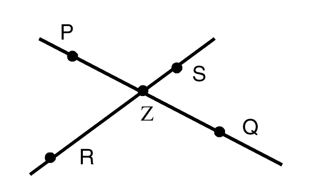

17
Programming Examples
See the following sections for programming examples:
- List Manipulation
- Symbol Manipulation
- Sorting a List of Points
- Computing the Center of a Bounding Box
- Computing the Area of a Bounding Box
- Computing a Bounding Box Centered at a Point
- Computing the Union of Several Bounding Boxes
- Computing the Intersection of Bounding Boxes
- Prime Factorizations
- Fibonacci Function
- Factorial Function
- Exponential Function
- Counting Values in a List
- Counting Characters in a String
- Regular Expression Pattern Matching
- Geometric Constructions
List Manipulation
A list is a linear sequence of Cadence® SKILL language data objects. The elements of a list can have any data type, including symbols or other lists. The printed presentation for a SKILL list uses a matching pair of parentheses to enclose the printed representations of the list elements. The trListIntersection and trListUnion functions illustrate
The trListUnion function also illustrates the nconc function, which destroys all but its last argument. In this case, the first argument is a new, anonymous list created by the setof function.
procedure( trListIntersection( list1 list2 )
setof( element list1
member( element list2 )
) ; setof
) ; procedure
procedure( trListUnion( list1 list2 )
nconc(
setof( element list2
!member( element list1)
) ; setof
list1
) ; nconc
) ; procedure
trListIntersection( ‘(a b c) ‘(b c d)) => (b c)
trListUnion( list(1 2 3) list(3 4 5 6)) => ( 4 5 6 1 2 3)
Symbol Manipulation
A symbol is the primary data structure within SKILL. A SKILL symbol has four data slots: the name, the value, the function definition, and the property list. Except for the name slot, all slots can be empty.
The trReplaceSymbolsWithValues function makes a copy of an arbitrary SKILL expression, in which all references to a symbol are replaced by the symbol’s value.
a = "one" b = "two" c = "three"
testCase = '( 1 2 ( a b ) )
trReplaceSymbolsWithValues( testCase ) => (1 2 ("one" "two"))
testCase = '(1 ( a ( c )) b )
trReplaceSymbolsWithValues( testCase ) => (1 ("one" ("three")) "two")
The trReplaceSymbolsWithValues illustrates
- Using recursion to process an arbitrary SKILL expression, making a copy of the expression in which all references to a symbol are replaced by the symbol’s value.
-
How the
condfunction handles several possibilities.
The listp function determines whether the expression is a list.
The symbolp function determines whether the expression is a list.
The symeval function retrieves the value of the expression, provided it is a symbol.
In the general case, the cond function recursively descends into the car of the expression and the cdr of the expression and builds a list from the results.
procedure( trReplaceSymbolsWithValues( expression )
cond(
( null( expression ) nil )
( symbolp( expression ) symeval( expression ) )
( listp( expression )
cons(
trReplaceSymbolsWithValues( car( expression ))
trReplaceSymbolsWithValues( cdr( expression ))
)
)
( t expression )
) ; cond
) ; procedure
x = 5
a = 1
trReplaceSymbolsWithValues( ‘(x a))
=> (5 1)
Sorting a List of Points
The trPointLowerLeftp function indicates whether pt1 is located to the lower left of pt2. This function illustrates
- Documenting at the function level
-
Using the
xCoordandyCoordfunctions -
Using the
condfunctionprocedure( trPointLowerLeftp( pt1 pt2 ) let( ( pt1x pt2x pt1y pt2y ) pt1x = xCoord( pt1 ) pt2x = xCoord( pt2 ) cond( ( pt1x < pt2x t ) ( pt1x == pt2x pt1y = yCoord( pt1 ) pt2y = yCoord( pt2 ) pt1y < pt2y ) ( t nil ) ) ; cond ) ; let ) ; procedure
trPointLowerLeftp( 0:0 100:100) => t
trPointLowerLeftp( 100:100 0:0) => nil
The trSortPointList function returns a list of points sorted destructively and illustrates
- Documenting at the function level
-
Using the
sortfunctionprocedure( trSortPointList( aPointList ) sort( aPointList 'trPointLowerLeftp ) ); procedure
x = list(100:0 100:100 0:0 50:50 0:100) trSortPointList( x ) => (( 0 0) (0 100) (50 50) (100 0) (100 100))
Computing the Center of a Bounding Box
The trBBoxCenter function returns the point at the center of a bounding box and illustrates
- Documenting at the function level
-
Using the
xCoordandyCoordfunction -
Using the
lowerLeftandupperRightfunction -
Using the colon (:) operator to build a point
procedure( trBBoxCenter( bBox ) let( ( llx lly urx ury ) ury = yCoord( upperRight( bBox )) urx = xCoord( upperRight( bBox )) llx = xCoord( lowerLeft( bBox )) lly = yCoord( lowerLeft( bBox )) ( urx + llx )/2 : ( ury + lly )/2 ) ; let ) ; procedure
trBBoxCenter( list(0:0 100:100)) => (50 50)
Computing the Area of a Bounding Box
The trBBoxArea function returns the area of a bounding box and illustrates
- Documenting at the function level
-
Using the
xCoordandyCoordfunctions -
Using the
lowerLeftandupperRightfunctions -
Using parentheses to change priority of arithmetic operations
procedure( trBBoxArea( bBox ) let( ( llx lly urx ury ) urx = xCoord( upperRight( bBox )) ury = yCoord( upperRight( bBox )) llx = xCoord( lowerLeft( bBox )) lly = yCoord( lowerLeft( bBox )) ( ury - lly ) * ( urx - llx ) ) ; let ) ; procedure
Computing a Bounding Box Centered at a Point
The trDot function returns bounding box coordinates with a given point as its center and illustrates
-
Using
@keyto declare keyword arguments - Establishing default values for a keyword argument
- Documenting at the function level
-
Using the
letfunction -
Using the
xCoordandyCoordfunctions -
Building a bounding box with the
listfunction and colon (:) operatorprocedure( trDot( aPoint @key ( deltaX 1 ) ( deltaY 1 ) ) let( ( llx lly urx ury aPointX aPointY ) aPointX = xCoord( aPoint ) aPointY = yCoord( aPoint ) llx = aPointX - deltaX urx = aPointX + deltaX lly = aPointY - deltaY ury = aPointY + deltaY list( llx:lly urx:ury ) ) ; let ) ; procedure
trDot( 100:100 ?deltaX 50 ?deltaY 50) => ((50 50) (150 150))
Computing the Union of Several Bounding Boxes
The trBBoxUnion function returns the smallest bounding box coordinates containing all the boxes in a given list and illustrates
-
Using
foreach( mapcar … ) -
Using the
applyfunction with theminandmaxfunctions -
Using the
listfunction and the colon (:) operator to construct a bounding box -
Documenting at the function level
procedure( trBBoxUnion( bBoxList ) let( ( llxList llyList urxList uryList minllx minlly maxurx maxury ) llxList = foreach( mapcar bBox bBoxList xCoord( lowerLeft( bBox ))) llyList = foreach( mapcar bBox bBoxList yCoord( lowerLeft( bBox ))) urxList = foreach( mapcar bBox bBoxList xCoord( upperRight( bBox ))) uryList = foreach( mapcar bBox bBoxList yCoord( upperRight( bBox ))) minllx = apply( 'min llxList ) minlly = apply( 'min llyList ) maxurx = apply( 'max urxList ) maxury = apply( 'max uryList ) list( minllx:minlly maxurx:maxury ) ) ; let ) ; procedure
trBBoxUnion( list( list(0:0 100:100) list(50:50 150:150))) => ((0 0) (150 150))
Computing the Intersection of Bounding Boxes
The trBBoxIntersection function illustrates
-
Using
foreach( mapcar … ) -
Using the
applyfunction with theminandmaxfunctions -
Using the
condfunction -
Using the
listfunction and colon (:) operator to construct a bounding boxprocedure( trBBoxIntersection( bBoxList ) let( ( llxList llyList urxList uryList maxllx maxlly minurx minury ) llxList = foreach( mapcar bBox bBoxList xCoord( lowerLeft( bBox ))) llyList = foreach( mapcar bBox bBoxList yCoord( lowerLeft( bBox ))) urxList = foreach( mapcar bBox bBoxList xCoord( upperRight( bBox ))) uryList = foreach( mapcar bBox bBoxList yCoord( upperRight( bBox ))) minurx = apply( 'min urxList ) minury = apply( 'min uryList ) maxllx = apply( 'max llxList ) maxlly = apply( 'max llyList ) cond( ( maxllx >= minurx nil ) ( maxlly >= minury nil ) ( t list( maxllx:maxlly minurx:minury )) ) ; cond ) ; let ) ; procedure
trBBoxIntersection( list( list(0:0 100:100) list(50:50 150:150))) => ( (50 50) (100 100))
Prime Factorizations
A prime factorization of an integer is a list of pairs and is an example of an association list. The first element of each pair is a prime number that divides the number and the second element is the exponent to which the prime is to be raised. Each such pair is termed a prime-exponent pair.
pf1 = '( ( 2 3 ) ( 3 5 ))
pf2 = '( ( 3 2 ) ( 5 2 ) ( 7 3 ))
pf3 = '( ( 3 2 ) ( 5 4 ) ( 7 2 )) pf4 = '( ( 3 6 ) ( 7 3 ) ( 11 2 ) ( 5 1 ))
The assoc function is used to determine whether a prime number occurs in a prime factorization. It returns either the prime-exponent pair or nil. For example:
assoc( 2 pf1 ) => ( 2 3 )
assoc( 7 pf2 ) => ( 7 3 )
Evaluating a Prime Factorization
To evaluate the prime factorization means to perform the arithmetic operations implied:
- For each prime-exponent pair, raise the prime to the corresponding exponent
- Multiply the resulting list of integers together
For example, evaluating the prime factorization
( ( 3 2 ) ( 5 2 ) ( 7 3 ))
3**2 * 5**2 * 7**3
The trTimes functions multiplies a list of numbers together. It handles two cases that the times function does not handle.
The trTimes function illustrates
-
Using an
@restargument to collect an arbitrary number of arguments into a list. -
Using the
applyfunction. In the general case, we use theapplyfunction to invoke the normal times function -
Using the
condfunction -
The
nullfunction tests for an empty list. Theonepfunction tests whether a number is oneprocedure( trTimes( @rest args ) cond( ( null( args ) 1 ) ( onep( length( args ) ) car( args )) ( t apply( 'times args )) ) ; cond ) ; procedure
The trEvalPF function evaluates the prime factorizations. For example:
pf1 = '( ( 2 3 ) ( 3 5 ))
pf2 = '( ( 3 2 ) ( 5 2 ) ( 7 3 ))
trEvalPF( pf1 ) => 1944
trEvalPF( pf2 ) => 77175
The trEvalPF function illustrates
-
Using the
applyfunction with thetrTimesfunction above -
Using the
foreach( mapcar … ) -
Using the
carandcadrfunctionsprocedure( trEvalPF( pf ) apply( 'trTimes foreach( mapcar pePair pf car( pePair )**cadr( pePair ) ) ; foreach ) ; apply ) ; procedure
Computing the Prime Factorization
The trLargestExp function returns the largest x such that divisor ** x <= number and illustrates
- Documenting at the function level
-
Using the
preincrementoperator -
Using the
letexpression to initialize a local variable to a non-nil value -
Using the
whilefunctionprocedure( trLargestExp( number divisor ) let( ( ( exp 0 ) ) while( zerop( mod( number divisor ) ) ++exp number = number / divisor ) ; while exp ) ; let ) ; procedure
The trPF function returns the prime factorization a number. For example:
trPF( 1003 ) => ((59 1) (17 1))
trPF( 10003 ) => ((1429 1) (7 1))
trPF( 100003 ) => ((100003 1))
trPF( 123456 ) => ((643 1) (3 1) (2 6))
- Documenting at the function level
-
Using the
postincrementoperator -
Using the
letexpression to initialize a local variable to a non-nilvalue -
Using the
whilefunction - Using parentheses to control operator precedence
-
Using
letto initialize a local variables to non-nil values -
Using a
whileloop -
Using
whenwith an embedded assignment expression -
Using
trLargestExpprocedure( trPF( aNumber ) let( ( ; locals ( divisor 2 ) result exp ( num aNumber ) ) while( num > 1 when( ( exp = trLargestExp( num divisor )) > 0 result = cons( list( divisor exp ) result ) num = num / divisor ** exp ) ; when divisor++ ;;; try next divisor ) ; while result ) ; let ) ; procedure
Multiplying Two Prime Factorizations
The trPFMult function returns the prime factorization of the product of two prime factorizations, pf1 and pf2. The trPFMult function uses the following algorithm to construct the resultant prime factorization.
- Those prime-exponent pairs whose primes occur in only one of the prime factorizations lists are carried across unaltered into the resultant prime factorization.
- For those primes that have entries in both prime factorizations, a prime-exponent pair using the prime is included with an exponent equal to the sum of prime’s exponent in either prime factorization.
The trPFMult function illustrates
-
Using the
setoffunction and theassocfunction to build two prime factorizations
The listpf1Notpf2contains all the prime-exponent pairs inpf1whose prime does not occur inpf2.
The listpf2Notpf1contains all the prime-exponent pairs inpf2whose prime does not occur inpf1. -
Using
foreach( mapcan … )to manage the lists of primes found in both lists
The listbothpf1Andpf2contains prime-exponent pairs whose primes are found in bothpf1andpf2. The exponent is the sum of the exponent for the prime inpf1andpf2. - Using the backquote (‘) and comma (,) operators
-
Using the
nconcfunction to destructively append the three listspf1Notpf2, pf2Notpf1, andbothpf1Andpf2trPFMult( pf1 pf2 ) => ( ( 2 3 ) ( 5 2 ) ( 7 3 ) ( 3 7 ))
procedure( trPFMult( pf1 pf2 ) let( ( pf1Notpf2 pf2Notpf1 bothpf1Andpf2 pePair2 ) pf1Notpf2 = setof( pePair1 pf1 !assoc( car( pePair1 ) pf2 ) ) pf2Notpf1 = setof( pePair2 pf2 !assoc( car( pePair2 ) pf1 ) ) bothpf1Andpf2 = foreach( mapcan pePair1 pf1 when( pePair2 = assoc( car( pePair1 ) pf2 ) ;; build a list containing a single prime-exponent pair. ;; The mapcan option to the foreach function ;; destructively appends these lists together. ‘( ( ,car( pePair1 ) ,(cadr( pePair1 )+cadr( pePair2 )) ) ) ) ; when ) ; foreach ;; destructively append the three lists together. nconc( pf1Notpf2 pf2Notpf1 bothpf1Andpf2 ) ) ; let ) ; procedure
Using Prime Factorizations to Compute the GCD
The trPFGCD function returns the prime factorization of the greatest common denominator (GCD) of two prime factorizations. This function illustrates
-
Using
foreach( mapcan … )to merge two association lists.
Primes found in both association lists are given an exponent equal to the minimum of the exponents in both the association lists. -
Using the backquote (
‘) and comma (,) operators.
procedure( trPFGCD( pf1 pf2 )
let( ( pePair2 )
foreach( mapcan pePair1 pf1
pePair2 = assoc( car( pePair1 ) pf2 )
when( pePair2
;; build a list containing a single prime-exponent pair.
;; The mapcan option to the foreach function
;; destructively appends these lists together.
‘( (
,car( pePair1 )
,min( cadr( pePair1 ) cadr( pePair2 ) )
) )
) ; when
) ; foreach
) ; let
) ; procedure
The trGCD function illustrates finding the greatest common denominator (GCD) of two numbers by
- Finding their prime factorizations
- Manipulating the prime factorizations to find the prime factorization of the GCD
- Evaluating the prime factorization
procedure( trGCD( num1 num2 )
trEvalPF( trPFGCD( trPF( num1 ) trPF( num2 )) )
) ; procedure
Fibonacci Function
This example illustrates a recursive implementation of the Fibonacci function, implemented directly from the mathematical definition.
procedure( fibonacci(n)
if( (n == 1 || n == 2) then 1
else fibonacci(n-1) + fibonacci(n-2)
))
fibonacci(3) => 2
fibonacci(6) => 8
The same example implemented in SKILL using LISP syntax looks like the following:
(defun fibonacci (n)
(cond
((or (equal n 1) (equal n 2)) 1)
(t (plus (fibonacci (difference n 1))
(fibonacci (difference n 2))))
)
)
Factorial Function
This is the recursive implementation of the factorial function
procedure( factorial( n )
if( zerop( n ) then
1
else
n*factorial( n-1)
) ; if
) ; procedure
This is an iterative implementation
procedure( factorial( n )
let( ( ( f 1 ))
for( i 1 n
f = f*i
) ; for
f ;;; return the value of f
) ; let
) ; procedure
Exponential Function
This function computes e to the power x by summing terms of the power series expansion of the mathematical function. It uses the factorial function.
procedure( e( x )
let( ((sum 1.0))
for( n 1 10
sum = sum + (1.0/factorial(n)) * x**n
) ; for
sum ;;; return the value of sum.
) ; let
) ; procedure
To get a sense of the accuracy of this implementation of the e function, observe
e( log( 10 ) ) => 9.999702 ;; should be 10.0
Counting Values in a List
The trCountValues function tallies the number of times each distinct value occurs as a top-level element of a list. It prints a report and returns an association list that pairs each unique value with it’s count. Two implementations are presented. The results are equivalent except for ordering.
-
The first implementation of
trCountValuesproducestrCountValues( '( 1 2 a b 2 b 3 ) ) => ((a 1) (b 2) (3 1) (2 2) (1 1))
and prints1 occurred 1 times. 2 occurred 2 times. 3 occurred 1 times. b occurred 2 times. a occurred 1 times.
-
The second implementation of
trCountValuesproducestrCountValues( '( 1 2 a b 2 b 3 ) ) => ((3 1) (b 2) (a 1) (2 2) (1 1))
and prints3 occurred 1 times. b occurred 2 times. a occurred 1 times. 2 occurred 2 times. 1 occurred 1 times.
The first implementation of the trCountValues function illustrates
-
Using an association table to maintain the counts
Each element in the list is used as an index into the table. -
Using the
tableToListfunction to build an association list for an association tableprocedure( trCountValues( aList ) let( ( ( countTable makeTable( "ValueTable" 0 ) ) ) foreach( element aList countTable[ element ] = countTable[ element ] + 1 ) ; foreach foreach( key countTable printf( " %L occurred %d times.\n" key countTable[ key ] ) ) ; foreach tableToList( countTable ) ;; convert to assoc list ) ; let ) ; procedure
The second implementation of the trCountValues function illustrates
- Using an association list to maintain the counts
-
Using the
assocfunction to retrieve an entry, if any, for an element -
Using the
rplacafunction to update the count for an entryprocedure( trCountValues( aList ) let( ( countAssocList countEntry count ) foreach( element aList countEntry = assoc( element countAssocList ) if( countEntry then ;; update the count for this element count = cadr( countEntry ) rplaca( cdr( countEntry ) ++count ) else ;; add an new entry for this element countAssocList = cons( list( element 1 ) ;; new entry countAssocList ) ) ; if ) ; foreach foreach( entry countAssocList printf( " %L occurred %d times.\n" car( entry ) ;; the element cadr( entry ) ;; the count ) ) ; foreach countAssocList ;; return value ) ; let ) ; procedure
Counting Characters in a String
The trCountCharacters function counts the occurrences of characters in a string.
The trCountCharacters illustrates
-
Using the
parseStringfunction to construct a list of characters that occur in a string -
Using either implementation of the
trCountValuesfunction to count the occurrences of the single-character stringsprocedure( trCountCharacters( aString ) trCountValues( parseString( aString "" )) ) ; procedure
Regular Expression Pattern Matching
The following functions take the regular expression pattern matching functions rexMatchp and rexMatchList provided by SKILL and build two new functions shMatchp and shMatchList, which provide a simple shell-filename-like pattern matching facility.
- Target strings should be single words
- A pattern is to match the entire target words
-
Special characters in a pattern:
The function sh2ed is used to build a regular expression that is passed to the rex functions.
(defun sh2ed (s)
(let ((sh_chars (parseString s ""))
(ed_chars (tconc nil "^")))
(while sh_chars
(case (car sh_chars)
("*" (tconc ed_chars ".") (tconc ed_chars "*"))
("?" (tconc ed_chars "."))
("." (tconc ed_chars "\\") (tconc ed_chars "."))
(t (tconc ed_chars (car sh_chars))))
(setq sh_chars (cdr sh_chars)))
(tconc ed_chars "$")
(buildString (car ed_chars) "")))
(defun shMatchp (pattern target)
(rexMatchp (sh2ed pattern) target))
(defun shMatchList (pattern targets)
(rexMatchList (sh2ed pattern) targets))
shMatchp("*.out" "a.out") => t
shMatchp("test.??" "test.il") => t
shMatchp("*.??" "test.out") => nil
shMatchList("*test.?" '("ALUtest.1" "data.in" "MEMtest.13" "test.5"))=> ("ALUtest.1" "test.5")
Geometric Constructions
Here is an extensive example of a SKILL++ Object Layer application.
Application Domain
A geometric construction is a collection of points and lines you build up from an initial collection of points. The initial collection of points are called free points. You can add points and lines to the collection through various familiar constraints. You can constrain
- A point to lie on two interesecting lines
- A line to pass through two points
- A line to pass through a point and to be parallel to another line
- A line to pass through a point and to be perpendicular to another line
When you move any one of the free points, the application propagates the change to all the constrained points and lines
Example
- You specify the free points P and Q.
- You construct the line PQ passing through P and Q.
- You specify the free points R and S.
- You construct the line RS passing through R and S.
-
You construct the intersection point Z of the line PQ and the line RS.

When you move any of the points P, Q, R, or S the lines PQ and RS and the point Z move accordingly.
Implementation
The implementation uses the SKILL++ Object System to define several classes and generic functions. The following sections discuss
To focus on SKILL++ language issues, the implementation does not address graphics. Instead, you non-graphically
- Call a SKILL function repeatedly to specify several free points.
- Call other SKILL functions to construct the dependent points and lines.
- Enter a SKILL expression to change the coordinates of one of the free points.
- Call a SKILL function to propagate the change through the constrainted points and lines.
- Call a SKILL function to describe one of the constrained points or lines.
Classes
The implementation uses the SKILL++ Object System to define several classes in the following class hierarchy.
GeometricObject Class
The GeometricObject class represents all the objects in the construction. It defines the constraints slot. This slot lists all the other objects which need to be notfied when the object updates.
Point Class
The Point class represents a point with slots x and y.
Line Class
The Line class represents a line with the slots A, B, and C. These are the coefficients in the line’s equation
Ax+By+C = 0
IntersectionTwoLines_Point Class
The IntersectionTwoLines_Point class is a subclass of the Point class and represents a point that lies on two intersecting lines. It includes two slots that store the lines.
TwoPoints_Line Class
The TwoPoints_Line class is a subclass of the Line class and represents a line passing through two points. The class defines two slots to store the points.
ParallelLineThroughPoint_Line Class
The ParallelLineThroughPoint_Line class is a subclass of the Line class and represents a line that passes through a point parallel to another line.
To specify a free point, you instantiate the Point class. To specify a constrained point or line, you instantiate the associated subclass.
Generic Functions
The implementation uses several generic functions.
-
The
Updatefunction propagates changes. It updates the coordinates or equations of an object and call itself recursively for each dependent object. -
The
Describefunction prints a description of an object and calls itself recursively for each dependent object. -
The
Validatefunction verifies that a point or line satisfies its constraints. -
The
Connectfunction adds an object to another object’s list of constraints.
The defgeneric declarations for these generic functions each a declare default method that raises an error.
Describing the Methods by Class
The following tables describe, for each generic function, all the methods by class. In the following tables,
- Earlier rows are at the same level or higher in the class hierarchy.
-
The etc. rows refer to other constraint subclasses of
PointorLinethat you can add to the implementation to extend its functionality.
Class Action Based on the two lines, recompute the coordinate of the point. Call the next
Updatemethod.Based on the two points, recompute the equation of the line. Call the next
Updatemethod.
Connect Methods
| Class | Method description |
|---|---|
Source Code
;;; toplevel( 'ils )
defgeneric( Connect ( obj constraint ) error( "Connect is a subclass responsibility\n" )
) ; defgeneric
defgeneric( Update ( obj ) error( "Update is a subclass responsibility\n" )
) ; defgeneric
defgeneric( Validate ( obj ) error( "Validate is a subclass responsibility\n" )
) ; defgeneric
defgeneric( Describe ( obj ) error( "Describe is a subclass responsibility\n" )
) ; defgeneric
;;;;;;;;;;;;;;;;;;;;;;;;;;;;;;;;;;;;;;;;;;;;;;;;;;;;;;;;;;;;;;;;;;
;;;;; GeometricObject
;;;;;;;;;;;;;;;;;;;;;;;;;;;;;;;;;;;;;;;;;;;;;;;;;;;;;;;;;;;
defclass( GeometricObject ()
(
( constraints
@initform nil
)
)
) ; defclass
defmethod( Connect (( obj GeometricObject ) constraint ) when( !member( constraint obj->constraints )
obj->constraints = cons( constraint obj->constraints )
) ; when
) ; defmethod
defmethod( Update (( obj GeometricObject )) printf( "Updating constraints %L for %L\n"
obj->constraints obj )
Validate( obj )
foreach( constraint obj->constraints
Update( constraint )
) ; foreach
t
) ; defmethod
;;;;;;;;;;;;;;;;;;;;;;;;;;;;;;;;;;;;;;;;;;;;;;;;;;;;;;;;;;;
;;;;;;;;;;;;; Point
;;;;;;;;;;;;;;;;;;;;;;;;;;;;;;;;;;;;;;;;;;;;;;;;;;;;;;;;;;;
defclass( Point ( GeometricObject ) (
( name @initarg name )
( x @initarg x );;; x-coordinate
( y @initarg y );;; y-coordinate
)
) ; defclass
defmethod( Describe (( obj Point )) printf( "%s at %n:%n\n"
className( classOf( obj )) obj->x obj->y )
) ;defmethod
defmethod( Validate ((obj Point)) t
)
;;;;;;;;;;;;;;;;;;;;;;;;;;;;;;;;;;;;;;;;;;;;;;;;;;;;;;;;;;
;;;;;;;;;;;;; IntersectionTwoLines_Point
;;;;;;;;;;;;;;;;;;;;;;;;;;;;;;;;;;;;;;;;;;;;;;;;;;;;;;;;;;;
defclass( IntersectionTwoLines_Point ( Point )
(
( L1 @initarg L1 )
( L2 @initarg L2 )
)
) ; defclass
defmethod( Describe (( obj IntersectionTwoLines_Point )) callNextMethod( obj );;; generic point description
printf( "…intersection of\n")
Describe( obj->L1 )
Describe( obj->L2 )
) ;defmethod
procedure( make_IntersectionTwoLines_Point( line1 line2 )
let( ( point )
point = makeInstance( 'IntersectionTwoLines_Point
?L1 line1
?L2 line2
)
Update( point )
Connect( line1 point )
Connect( line2 point )
point
) ; let
) ; procedure
defmethod( Validate (( obj IntersectionTwoLines_Point )) let( ( A1 B1 C1 A2 B2 C2 x y )
A1 = obj->L1->A
B1 = obj->L1->B
C1 = obj->L1->C
A2 = obj->L2->A
B2 = obj->L2->B
C2 = obj->L2->C
x = obj->x
y = obj->y
when( A1*x+B1*y+C1 != 0.0 || A2*x+B2*y+C2 != 0.0
error( "Invalid IntersectionTwoLines_Point\n" )
) ; when
t
) ; let
) ; defmethod
defmethod( Update (( obj IntersectionTwoLines_Point ))
;; check to see if my two lines have values …
printf( "Figure out my x & y from lines %L %L\n"
obj->L1 obj->L2 )
let( ( A1 B1 C1 A2 B2 C2 det )
A1 = obj->L1->A
B1 = obj->L1->B
C1 = obj->L1->C
A2 = obj->L2->A
B2 = obj->L2->B
C2 = obj->L2->C
det = A1*B2-A2*B1
when( det == 0
error( "Can not intersect two parallel lines\n" )
)
obj->x = ((-C1)*B2-(-C2)*B1)*1.0/det
obj->y = (A1*(-C2)-A2*(-C1))*1.0/det
) ; let
callNextMethod( obj )
) ; defmethod
;;;;;;;;;;;;;;;;;;;;;;;;;;;;;;;;;;;;;;;;;;;;;;;;;;;;;;;;;;;;
;;;;;;;;;;;;; Line
;;;;;;;;;;;;;;;;;;;;;;;;;;;;;;;;;;;;;;;;;;;;;;;;;;;;;;;;;;;
defclass( Line ( GeometricObject ) ( ;;;; Ax+By+C = 0
( A )
( B )
( C )
)
) ; defclass
defmethod( Describe (( obj Line )) printf( "%s %nx+%ny+%n=0\n"
className( classOf( obj ))
obj->A obj->B obj->C
)
) ; defmethod
;;;;;;;;;;;;;;;;;;;;;;;;;;;;;;;;;;;;;;;;;;;;;;;;;;;;;;;;
;;;;;;;;;;;;; TwoPoints_Line
;;;;;;;;;;;;;;;;;;;;;;;;;;;;;;;;;;;;;;;;;;;;;;;;;;;;;;;;
defclass( TwoPoints_Line ( Line ) (
( P1 @initarg P1 )
( P2 @initarg P2 )
)
) ; defclass
defmethod( Describe (( obj TwoPoints_Line )) callNextMethod( obj )
printf( "…containing\n" )
Describe( obj->P1 )
Describe( obj->P2 )
) ; defmethod
procedure( make_TwoPoints_Line( p1 p2 ) let( ( line )
line = makeInstance( 'TwoPoints_Line
?P1 p1 ?P2 p2 )
Update( line )
Connect( p1 line )
Connect( p2 line )
line
) ; let
) ; procedure
defmethod( Validate (( obj TwoPoints_Line ))
let( (x1 y1 x2 y2 A B C)
x1 = obj->P1->x
x2 = obj->P2->x
y1 = obj->P1->y
y2 = obj->P2->y
A = obj->A
B = obj->B
C = obj->C
if( A*x1+B*y1+C != 0.0 then
error( "Invalid TwoPoints_Line\n" ))
if( A*x2+B*y2+C != 0.0 then
error( "Invalid TwoPoints_Line\n" ))
t
) ; let
) ; defmethod
defmethod( Update (( obj TwoPoints_Line )) let( (x1 y1 x2 y2 m b)
x1 = obj->P1->x
x2 = obj->P2->x
y1 = obj->P1->y
y2 = obj->P2->y
if( x2-x1 != 0
then
m = (y2-y1)*1.0/(x2-x1)
b = y2-m*x2
obj->A = -m
obj->B = 1
obj->C = -b
else
obj->A = 1.0
obj->B = 0.0
obj->C = -x1
) ; if
) ; let
callNextMethod( obj )
) ; defmethod
;;;;;;;;;;;;;;;;;;;;;;;;;;;;;;;;;;;;;;;;;;;;;;;;;;;;;;;;;;;
;;;;;;;;;;;;; ParallelLineThroughPoint_Line
;;;;;;;;;;;;;;;;;;;;;;;;;;;;;;;;;;;;;;;;;;;;;;;;;;;;;;;;;;;
defclass( ParallelLineThroughPoint_Line ( Line ) (
( P @initarg P)
( L @initarg L)
)
) ; defclass
defmethod( Validate (( obj ParallelLineThroughPoint_Line )) let( (x1 y1 A B C LA LB LC)
x1 = obj->P->x
y1 = obj->P->y
LA = obj->L->A
LB = obj->L->B
LC = obj->L->C
A = obj->A
B = obj->B
C = obj->C
when( A*LB-LA*B != 0.0 || A*x1+B*y1+C != 0
error( "Invalid ParallelLineThroughPoint_Line\n" ))
t
) ; let
) ; defmethod
defmethod( Describe (( obj ParallelLineThroughPoint_Line )) callNextMethod( obj )
printf( "…Containing\n" )
Describe( obj->P )
printf( "…Parallel to\n" )
Describe( obj->L )
) ; defmethod
procedure( make_ParallelLineThroughPoint_Line( point line )
let( ( parallel_line )
parallel_line = makeInstance(
'ParallelLineThroughPoint_Line
?P point
?L line
)
Update( parallel_line )
Connect( point parallel_line )
Connect( line parallel_line )
parallel_line
) ; let
) ; procedure
defmethod( Update (( obj ParallelLineThroughPoint_Line )) let( ( A B C x1 y1 )
A = obj->L->A
B = obj->L->B
C = obj->L->C
x1 = obj->P->x
y1 = obj->P->y
obj->A = A
obj->B = B
obj->C = -(A*x1+B*y1)
) ; let
callNextMethod( obj )
) ; defmethod
Example 1
- Creates a point P and describes it
- Creates another point R and describes it
- Constructs the line L that passes through the points P and R and describe it
-
Changes the x coordinate of P to 1 and calls the
Updatefunction to propagate the changed coordinates of P
In this version of the application, it is your responsibility to call theUpdatefunction after changing the coordinates of a free point. You should not use the->operator to change the coordinates of a non-free point. -
Describes the line L to verify that it has been updated
P = makeInstance( 'Point ?x 0 ?y 4 ) stdobj:0x36f018 Describe( P ) Point at 0:4 t R = makeInstance( 'Point ?x 3 ?y 0 ) stdobj:0x36f024 Describe( R ) Point at 3:0 t L = make_TwoPoints_Line( P R ) Updating constraints nil for stdobj:0x36f030 stdobj:0x36f030
Describe( L ) TwoPoints_Line 1.333333x+1y+-4.000000=0 …containing Point at 0:4 Point at 3:0 t P->x = 1 1 Update( P ) Updating constraints (stdobj:0x36f030) for stdobj:0x36f018 Updating constraints nil for stdobj:0x36f030 t Describe( L ) TwoPoints_Line 2.000000x+1y+-6.000000=0 …containing Point at 1:4 Point at 3:0 t
Example 2
- Creates four points P, Q, S, and R
- Constructs the line PQ that passes through the points P and Q
- Constructs the line SR that passes through the points S and R
- Constructs the point Z that is on both the lines PQ and SR and describes the point Z
- Changes the y coordinate of the point S to 4 and updates the point S
-
Describes the point Z to verify that it has been updated
P = makeInstance( 'Point ?x 0 ?y 4 ) stdobj:0x36f090 Q = makeInstance( 'Point ?x 0 ?y -4 ) stdobj:0x36f09c S = makeInstance( 'Point ?x -3 ?y 0 ) stdobj:0x36f0a8 R = makeInstance( 'Point ?x 3 ?y 0 ) stdobj:0x36f0b4 PQ = make_TwoPoints_Line( P Q ) Updating constraints nil for stdobj:0x36f0c0 stdobj:0x36f0c0
SR = make_TwoPoints_Line( S R ) Updating constraints nil for stdobj:0x36f0cc stdobj:0x36f0cc
Z = make_IntersectionTwoLines_Point( PQ SR ) Figure out my x & y from lines stdobj:0x36f0c0 stdobj:0x36f0cc Updating constraints nil for stdobj:0x36f0d8 stdobj:0x36f0d8
Describe( Z ) IntersectionTwoLines_Point at 0.000000:0.000000 TwoPoints_Line 1.000000x+0.000000y+0=0 …containing Point at 0:4 Point at 0:-4 TwoPoints_Line -0.000000x+1y+-0.000000=0 …containing Point at -3:0 Point at 3:0 t
S->y = 4 4
Update( S) Updating constraints (stdobj:0x36f0cc) for stdobj:0x36f0a8 Updating constraints (stdobj:0x36f0d8) for stdobj:0x36f0cc Figure out my x & y from lines stdobj:0x36f0c0 stdobj:0x36f0cc Updating constraints nil for stdobj:0x36f0d8 t Describe( Z ) IntersectionTwoLines_Point at 0.000000:2.000000 TwoPoints_Line 1.000000x+0.000000y+0=0 …containing Point at 0:4 Point at 0:-4 TwoPoints_Line 0.666667x+1y+-2.000000=0 …containing Point at -3:4 Point at 3:0 t
Extending the Implementation
Consider the following extensions:
-
Protecting the implementation from inconsistent access
You can use the->operator to change coordinates of any point, even a constrained point. You can extend the implementation to allow the user to change only coordinates of free points. -
Adding graphics
You can extend the implementation to associate a database object with each point or line and update the database object at appropriate times. You should have to affect only thePointandLineclasses.
Return to top